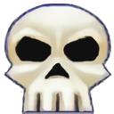
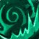
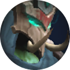
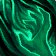
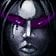
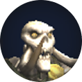
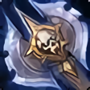
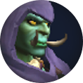
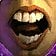

Rituál u Soulcoil Well
Nek'zali je úvodní boss The Venomous Abyss, fightovaný okolo centrální hrozby — Soulcoil Well. Jádro fightu: nepustit zbytečné duchy ke Well, rychle zabíjet správné adds a přerušit "Tethers of Awakening" během intermise. Pozice hazardů ve fázi 1 přímo ovlivňuje, jak náročná bude fáze 2.
Well je energy/DoT motor. Cokoliv, co se dotkne Well — add i hráč — spustí Soulcoil Rite: raid-wide damage, a Nek'zali za to navíc dostane +5 Energy. Na Heroic k tomu přibývá stackující Ritual Burn, díky kterému bolí každý další zásah víc. Pokud Nek'zali dosáhne 100 Energy, přichází Uncoiled Rage: +500 % damage, +150 % rychlost útoku/pohybu, immunity na taunt — tvrdý wipe. Celý fight je tak závod: udržet adds i hráče mimo Well a sundat bosse dřív, než se energie naplní.
Schopnosti Nek'zali
Rozdělte pozornost mezi rituální/well mechaniky a klasický tank/add management.
Soulcoil rituál
Duchové a tankové mechaniky
Immortal Coil
Mapa arény
Přímá kopie reálného raid plánu (7 scén) publikovaného guildou na raidstrats.gg — pozice, ikony i poznámky jsou přesně z jejich dat (včetně případných překlepů v poznámkách), nejde o mou interpretaci. Šipkami/tečkami pod obrázkem procházíte jednotlivé scény.
2 Fáze + Intermisse
Přechod v 50%
BL Pull/P2 podle DPS
100% energie P2 - > Enrage = WIPE
Intermise - stack na lebce



soulcoil rite dává o 15% větší dmg




4 náhodný targety
Odběhnout směrem ke zdi
Dispell -> bordel na zemi

Rend
Směrem k tankovi letí duchové
Při kontaktu raidwide dmg
Delší trasa=menší dmg
Nikdo nestojí mezi bossem a tankem

Barrage

Pokusit se natáhnout na hromadu
Taunt imunita přes štít
->zničit/purgnout štít

Zničit velké addy, jednu po druhé

Velká adda dělá velký soak
Velký soak upálí mrtvoly po malých addách
Kdo nebyl ve velkém soaku dostane malý soak
Malým soakem upálit addy mimo hromadu
Pyre
Zůstávají všechny mechaniky z P1:
Essence Rend, Tank Buster i Addky
Navíc:
Bordel se točí kolem místnosti
Boss cástí Invoke:
-každý invoke popne Soulcoil Rite
-Každý invoke roztočí bordel do různých směrů

Rite
Přehled: single target + addcleave, 2 fáze + intermezzo, přechod v 50 %. Skull marker = stack bod pro intermezzo.
Fáze 1 — pozice rolí a Essence Rend: 4 targety odbíhají ke zdi, dispel nechá bordel na zemi.
Fáze 1 — Possession Barrage: delší trasa duchů k tankovi = menší damage, nikdo nestojí mezi bossem a tankem.
Fáze 1 — Restless Amani: natáhnout na hromadu, štít dává taunt immunitu (zničit nebo purgnout).
Intermezzo: zabít dva velké addy (Echo of Jawae) jednoho po druhém.
Intermezzo — Hungering Pyre: velký soak spálí hromadu mrtvol, malý soak spálí zbytek mimo ni.
Fáze 2: opakování Fáze 1 + Invoke — popne Soulcoil Rite a roztočí bordel do různých směrů.
Časová osa fightu
Initiation (100–50 % HP)
Add control a vyhýbání se Well. Rozbíjejte štíty Restless Amani a dorážejte je skupinově dřív, než dojdou k Well, řešte Essence Rend a Possession Barrage.
Intermise — Ritual of Awakening
Boss se stáhne a channeluje u Well. Zabijte dva Echoes of Jawae jednoho po druhém — velký soak od zabitého adda spálí mrtvoly Amani nastackované na hromadě, kdo v něm nebyl, dostane malý soak na spálení zbylých mrtvol mimo hromadu (na Heroic je nutné takhle spálit všechny, ať se neprobudí zpátky). Sledujte Residual Toll DoT. Na Mythic navíc Immortal Coil odbočka.
Uncoiling
Energy se vynuluje, stejné mechaniky jako P1 plus Invoke navíc (raid-wide Soulcoil Rite + přemístění poolů). Debuffy už nevyprchávají — čistý damage race proti 100 Energy enrage timeru. Podle damage checku zvažte Bloodlust radši sem než na pull.
Co sledovat za tanka, healera a DPS
Tankování
- Positioning bosse mimo raid, Possession Barrage směřujte do prázdna.
- Swapujte kolem 5–6 stacků Hollowed.
- V intermisi soakujte Hungering Pyre s půlkou raidu.
- V P2 očekávejte taunt immunity.
Healing
- Šetřete cooldowny na Soulcoil Ignition a vysoké stacky.
- Doplňte hráče hned po odeznění Essence Rend absorbu.
- Sledujte Corpse Blight burst po smrti Restless Amani (Heroic+) a hlídejte Residual Toll v intermisi.
- Na Mythic léčte přes Soul Exhaustion po návratu z Immortal Coil.
Damage
- Zabíjejte Latent Cultists blokující pohyb.
- Rozbíjejte štíty Restless Amani jako první, pak je AoE dorazte, dřív než dojdou k Well.
- V intermisi pálíte Echoes of Jawae, ne bosse.
- Nestůjte v zónách Essence Rend / Anguished Echoes.
Normal → Heroic → Mythic
| Obtížnost | Co se mění |
|---|---|
| Normal | Základní verze všech mechanik, velkorysé prahy. |
| Heroic | Ritual Burn — 60s stackující debuff, +15 % damage taken z dalšího Soulcoil Rite za stack. Vessel of Awakening — mrtvoly Restless Amani z P1 ožívají v intermisi jako posílené adds. Possession Barrage navíc aplikuje Hollowing Strikes. Slithering Flame na nesoaknuté hráče u Hungering Pyre spustí po vypršení Cremation (spálí mrtvoly v okruhu 4 yardů). |
| Mythic | Přidává plnou odbočku Immortal Coil / Drowned Echo v intermisi, Soul Exhaustion, upgradovaný silencující Invoke a těsnější exekuční okna po celý fight. |
Kvíz k mechanikám
Šest otázek na hlavní mechaniky fightu. Vyberte odpověď — správná se zvýrazní zeleně, chybná červeně.